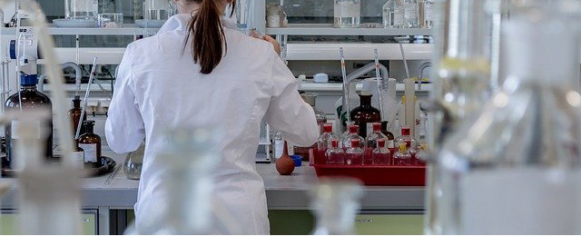

기업개요
기업소개
따옴표 좋은 의약품을 생산해 국민건강에 이바지한다. 따옴표
동아제약은 소비자들이 처방전 없이 살 수 있는 일반의약품, 의약외품 및 건강기능식품을 주 사업분야로 하고 있습니다. 주요 제품으로는 박카스, 판피린, 써큐란, 가그린, 모닝케어, 템포 등이 있습니다. 동아제약은 창립 당시의 ‘좋은 의약품을 생산하여 국민 건강에 이바지한다’는 창업정신을 그대로 계승해 국내 최고의 헬스케어 전문기업으로 성장해 나갈 것입니다. 또한, 환경경영을 통해 기업에게 주어지는 다양한 환경적 도전에 효과적으로 대응해 나가면서 대내외 이해관계자의 기대 요구를 수용하고, 실천함으로써 기업의 가치있는 생존과 지속적인 발전을 추구하도록 하겠습니다.
인간은 모두가 건강하고 행복한 삶을 영위할 권리를 가지고 있습니다. 그러나 현대사회의 복잡해진 사회구조와 발달된 물질문명은 많은 새로운 질병들을 출현시키고 있습니다. 이런 질병들로 부터 인류의 건강을 보호하고 질병의 근원적 퇴치를 위하여 동아제약은 우수한 인재와 최신의 기재를 확보하고 첨단의약정보와 기술을 활용하여 끊임없이 우수 의약품 개발에 도전하고 있습니다.
가치 및 비전
따옴표 혁신적 의약품으로 존경받는 세계적 수준의 기업입니다. 따옴표
- MISSION
- 인류의 건강과 행복을 위한 끝없는 도전
- VISION
- 차별화로 Global Healthcare Player 도약
- VALUE
- 동아제약이 가장 소중하게 지켜온 가치
준법경영
따옴표 동아제약은 '윤리경영'을 실천하여 '글로벌 제약기업'으로 도약하려고 합니다. 따옴표
- 01. 공정거래 자율준수 프로그램 (CP) 이란?
- CP는 Compliance Program의 약자로써, 기업이 경제활동을 하는데 있어 경쟁질서를 확립하고, 공정거래 관련 법규를 스스로 준수하기 위하여 자체적으로 제정·운영하는 교육·감독 등의 ‘내부준법시스템’을 말합니다. CP는 법 위반 행위 여부를 조기에 발견하고 이를 자진시정 할 수 있는 기회를 제공함은 물론 동일한 법 위반 행위가 발생하지 않도록 대응책을 마련할 수 있는 기반을 제공합니다.
- 02. CP 시행 배경
- 공정거래 관련 법규는 ‘독점규제 및 공정거래에 관한 법률’, ‘표시·광고의 공정화에 관한 법률’, ‘하도급거래 공정화에 관한 법률’, ‘약관규제법’, ‘가맹사업 공정화에 관한 법률’, ‘전자상거래 등에서의소비자 보호에 관한 법률’ 등 경쟁촉진과 공정거래질서유지를 위해 제정된 제반 법규를 말합니다.
- 동아제약은 이러한 공정거래 관련 법규 준수를 위하여, 2017년 3월 공정거래 자율준수프로그램(CP)을 도입하고, 운영 규정을 마련함으로써 임직원들이 공정거래 관련법의 준수를 위하여 지켜야 할 기본적인 절차와 기준을 제시하였습니다. 이러한 노력 등은 임직원들에게 공정거래 관련 법령 준수를 위한 명확한 행동기준을 제시하고 준법의식을 기업의 문화로 정착시키는데 기여하고 있습니다.